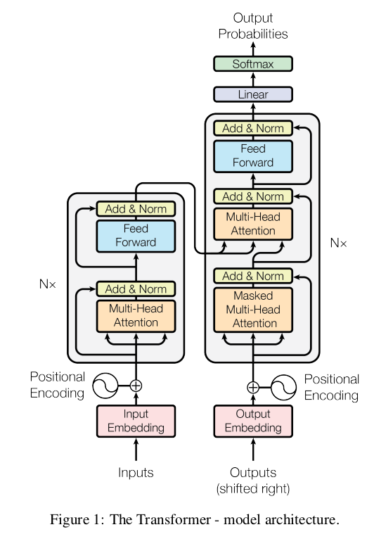
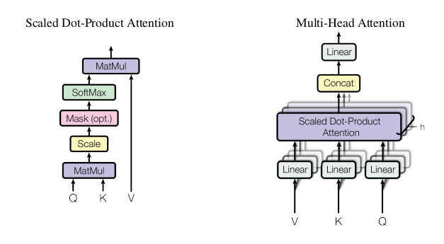

Introduction
- This paper review is following the blog from Jay Alammar’s blog on the Illustrated Transformer. The blog can be found here.
Paper Introduction
New architecture based solely on attention mechanisms called Transformer. Gets rids of recurrent and convolution networks completely.
Generally, RNN used to seq-to-seq tasks such as translation, language modelling, etc.
Transformer allows for significant parallelization and relies only on attention.
Background
- Self attention Attention to different positions of a sequence in order to compute a representation of the sequence.
Model Architecture
Transformer uses the following:
Encoder decode mechanism
Stacked self attention
Point wise fully connected layer for encoder and decoder

Transformer
Encoder and decoder stacks
Encoder: 6 identical layers. 2 sub layers per layer
First: multi-head self attention mechanism
Second: Fully connected feed forward network
Apply residual connection for each of the two laters
Apply layer normalization
Decoder: 6 identical layers. 2 sub layers as above + 1 more which performs multi-head attention over output of encoder stack
Residual blocks: Present around all 3 sub layers
Layer normalization: Normalizes input across features instead of normalizing input features across batch dimension(i.e in batch normalization). There is a great overview of normalization layers available by Akash Bindal here.
Modify self-attention sub layer to prevent positions from attending to subsequent positions. Ensures that i output depends only on words before i.
Attention
3 vectors: Query(Q), Key(K) and Value(V)
Output = Weighted sum of values. Weights assigned as a function of query with key.
Scaled dot-product attention and multi-head attention

Types of Attention Attention is calculated as:
\[ Attention(Q,K,V) = softmax(\frac{QK^T}{\sqrt{d_k}})V \]
Dot product attention is faster and more space-efficient than additive attention.
Multi head attention
Using multile q, k and v vectors. Get the final output, concatenate them and get another final projection \(d_{v}\).
$$ MultiHead(Q,K,V) = Concat(head_1,…,head_h)W^O \
\text{where } head_i = Attention(QW_{i}^{Q}, KW_{i}^{K},VW_{i}^{V})$$
Dimensions of the key and value matrices will be: \(d_{k} = d_{v} = d_{model}/h = 64\)
Applications of attention
Encoder-decoder attention: Q from previours decoder, K and V from output of decoder. Attend to all positions in the input sequence.
Encoder: Self attentnion laters. Q,K and V from output of previous layer in the encoder. Some talk about leftward flow, didn’t really understand this bit. Will come back to this in sometime.
Position-wise Feed-Forward Networks
Each layer contains feed-forward network.
\[ FFN(x) = max(o, xW_1,+ b_1)W_2 + b_2 \]
Embeddings and Softmax
Convert input and output string to vectors of dim \(d_{model}\)
Share weight matrix between two embedding layers and the pre-softmaax linear transformation
Positional Encoding
Encode positions of the tokens for the input and output.
Same vector size i.e \(d_{model}\)
$$ PE_{(pos, 2i)} = sin(pos/10000^{2i/d_{model}}) \
PE_{(pos, 2i+1)} = cos(pos/10000^{2i/d_{model}})$$
Might allow approximation of longer sequence lenghts than seen in the training set
Why self attention?
Total computational complexity per layer
Parallel Computation
Path length between long-range dependencies in the network.
Training
Optimizer
Use Adam. Vary learning rate according to formula: \(lrate = d_{model}^{-0.5} . min(step_num^{-0.5}, step_num . warmupsteps^{-1.5})\)
Increase LR for warmup steps, then decrease propotionally to inverse square root of step number. Warmup steps = 4000
Regularization
Residual Dropout
Label Smoothing: Instead of using 0 and 1 as class labels, allow for some uncertainity in the prediction, and use values like 0.1 and 0.9 for the classes
Conclusion
- This was the first model based entirely on attention. It acheived SOTA results on Machine Translation and English contituency parsing.